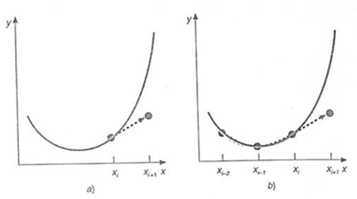
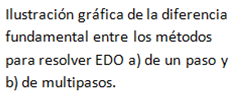

UNIDAD 6: SOLUCIÓN DE ECUACIONES DIFERENCIALES
1Fundamentos de ecuaciones diferenciales.
Se llama ecuación diferencial a aquella ecuación que contiene derivadas Si la ecuación sólo tiene una sola variable independiente recibe el nombre de ecuaciones diferenciales ordinarias (EDO).Si la ecuación contiene más de una variable independiente, apareciendo así sus derivadas parciales, recibe el nombre de ecuaciones diferenciales en derivadas parciales.
2Métodos de un paso: Método de Euler, Método de Euler mejorado y Método de Runge-Kutta.
Este método se aplica para encontrar la solución a ecuaciones diferenciales ordinarias (EDO), esto es, cuando la función involucra solo una variable independiente. El método se basa de forma general en la pendiente estimada de la función para extrapolar desde un valor anterior a un nuevo valor:
Nuevo valor = valor anterior + pendiente x tamaño de paso.

3Métodos de pasos múltiples
Los métodos de un paso descritos en las secciones anteriores utilizan información en un solo punto xi para predecir un valor de la variable dependiente yi+1 en un punto futuro xi+1. Procedimientos alternativos, llamados métodos multipaso, se basan en el conocimiento de que una vez empezado el cálculo, se tiene información valiosa de los puntos anteriores y esta a nuestra disposición. La curvatura de las líneas que conectan esos valores previos proporciona información con respecto a la trayectoria de la solución. Los métodos multipaso que exploraremos aprovechan esta información para resolver las EDO. Antes de describir las versiones de orden superior, presentaremos un método simple de segundo orden que sirve para demostrar las características generales de los procedimientos multipaso.


4Sistemas de ecuaciones diferenciales ordinarias
En un sistema de ecuaciones diferenciales ordinarias de cualquier orden, puede ser reducido a un sistema equivalente de primer orden, si se introducen nuevas variables y ecuaciones. Por esa razón en este artículo sólo se consideran sistemas de ecuaciones de primer orden. Un sistema de ecuaciones diferenciales ordinarias de primer orden escrito en forma explícita es un sistema de ecuaciones.